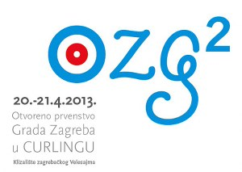
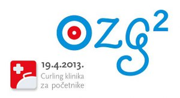

← Sve vijesti 21. 04. 2013. 2. Otvoreno prvenstvo Zagreba Konačan poredak: Muškarci Zagreb Vis Croling Žene Zagreb Zapruđe Mješovite ekipe Kamen ? ? Mješoviti parovi Rolling Stones KIFvsFER Kamenčić  